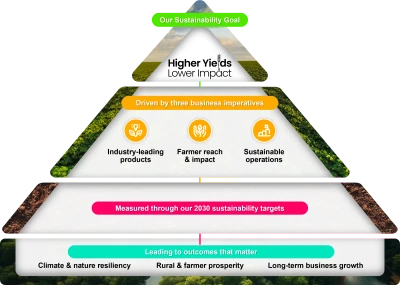

Çığır açan teknolojiyi kullanarak bilim insanları artık ürünleri gerçek zamanlı olarak dinleyebiliyor; bu yeteneği, çiftçilerin en büyük tehditlerinden biri olan kokarca böceğine yaklaşımını geliştirmek için kullanıyor.
Devamını okuHikayemiz, Amacımızın arkasındaki anlatı ve neden önemli olduğudur. Paydaşlar için ikna edici bir bağlam sunar ve markalarımıza ve misyonumuza olan güveni pekiştirir.
Dünya, tarımın yeni bir çağına girerken iki cephede bir zorlukla karşı karşıyayız. Çiftçilerin, kötüleşen hava koşulları arasında artan bir nüfusu beslemek için daha fazla gıda üretmesi gerekirken, bu gıdayı gezegenimize fayda sağlayacak şekilde yetiştirmesi de gerekiyor.
Syngenta Group olarak, çiftçilere her tarlada çığır açan çözümler sunuyoruz; böylece bu çift yönlü zorluğun üstesinden gelebilsinler.
Aşağıdaki bağlantıyı kullanarak meslektaşlarımızın Amacımızı hayata geçiren Çığır Açan Hikayelerini daha fazla keşfedin.
Daha düşük etkiyle daha yüksek verim sağlama sürdürülebilirlik hedefimiz tarafından yönlendirilen ve inovasyona olan tutkumuzla yönlendirilen, dünya nüfusunu hız ve ölçekte beslemek için gereken dönüşümü gerçekleştiriyoruz.
İşbirlikçi yaklaşımımız, dünya standartlarında yetenekleri eşsiz bir bilgi ve veri kütüphanesi, ileri teknolojiler ve yapay zeka ile birleştirir. Bu, çığır açan inovasyonlar aracılığıyla uzun vadeli iş büyümesi sağlamamıza olanak tanır.
Sürdürülebilirlik Hedefimiz hakkında daha fazla bilgi edinin:

Cesur bilim insanları; çiftçiler için her anın önemli olduğunu bilen, araştırmayı hızlandırarak zorlukların üstesinden gelen ve her zamankinden daha hızlı çığır açan. Bunun yanı sıra müşterilerimizin ihtiyaç duydukları ürünleri ihtiyaç duydukları anda almalarını sağlamak için bireysel sorumluluk üstlenen hesap verebilir ticari yöneticiler.
Tutkulu agronomistler; aynı arazide daha fazla ürün yetiştirmenin daha iyi yollarını bulmak için çiftçilerle birlikte çalışarak çığır açan çözümler sunan. Bunun yanı sıra çözümlerimizin çiftçilere tam doğru anda ulaşmasının en iyi yolunun işbirliği olduğunu bilen tedarik zinciri uzmanları.
Meraklı ıslahçılar; yeni özellikleri birleştirerek bitki dayanıklılığını artıran ve çığır açan gelişmeler sağlayan. Bunun yanı sıra sporcuların kişisel en iyilerini ortaya koymak için ihtiyaç duydukları en üst düzey yüzeyi anlayan çim uzmanları.
Tarımdaki en iyi ekip ve güçlü markalarımızla, dünyayı beslemeye ve geliştirmeye yardımcı olmak için çiftçilere her tarlada çığır açan çözümler sunuyoruz.
Aşağıda Amacımızı hayata geçiren ilgi çekici hikayeler bulacaksınız.
Çığır açan teknolojiyi kullanarak bilim insanları artık ürünleri gerçek zamanlı olarak dinleyebiliyor; bu yeteneği, çiftçilerin en büyük tehditlerinden biri olan kokarca böceğine yaklaşımını geliştirmek için kullanıyor.
Devamını okuÇiftçilere özel ve uygulanabilir tavsiyeler sunan, tarımdaki tahmini ortadan kaldıran ve çiftçilerin kaynaklarını daha bilinçli kullanmalarını sağlayan özelleştirilmiş bir tarımsal sohbet botu.
Devamını okuSebze tohumu inovasyonunda lider olarak, 21. yüzyılın sağlıklı atıştırma devriminde kilit bir rol oynadık; tüketici beslenme alışkanlıklarındaki değişimleri doğru bir şekilde öngörerek pazarın evrimine etki ettik.
Devamını okuSyngenta'nın oyun değiştiren mısır hibridi NK501VIP3, tropikal kuzeyden subtropikal güneye kadar çiftçiler için mümkün olanı yeniden yazıyor.
Devamını oku15 yılı aşkın süredir Syngenta'nın Operation Pollinator programı, golf sahalarını oyun dışı alanları doğa dostu şekilde yönetmeye teşvik ediyor.
Devamını okuFeromon teknolojileri, üçüncü en büyük pirinç üreticisi olan Endonezya'da zararlı kontrolüne sürdürülebilir bir yaklaşım olduğunu kanıtlıyor.
Devamını okuYapay zeka, üretim ve tedarikte işbirlikçi bir ortak haline geliyor; ekiplerin daha akıllı ve daha hızlı çalışmasına yardımcı oluyor.
Devamını oku2024 sonundan itibaren, dört yıllık araştırma ve yoğun çalışmanın sonucu olarak, Avrupa'da ekilen neredeyse her Syngenta sebze tohumunun kaplaması artık mikroplastiklerden arındırılmıştır.
Devamını oku